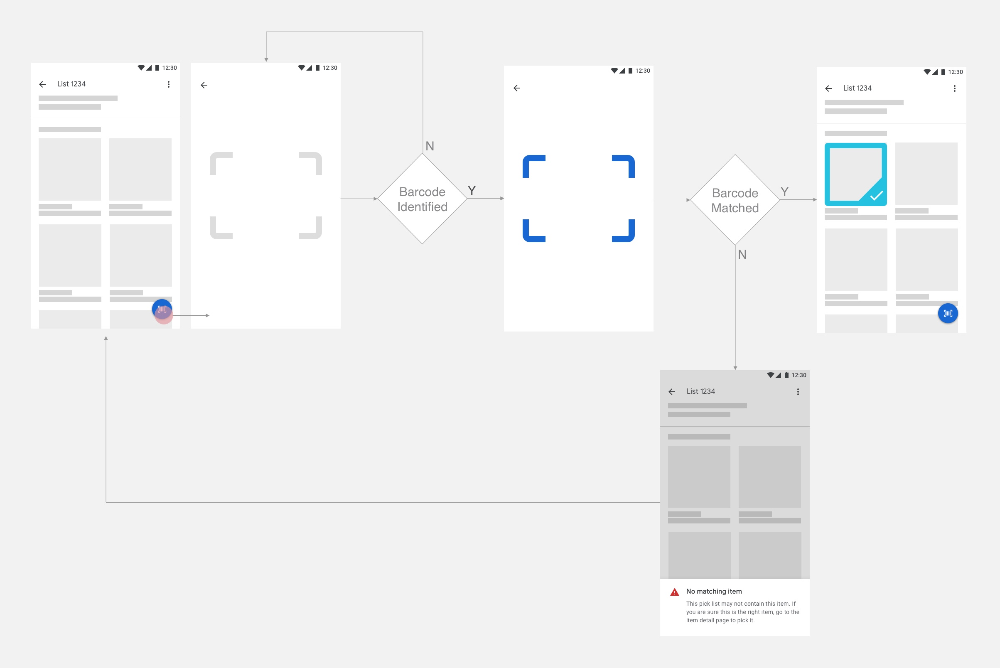
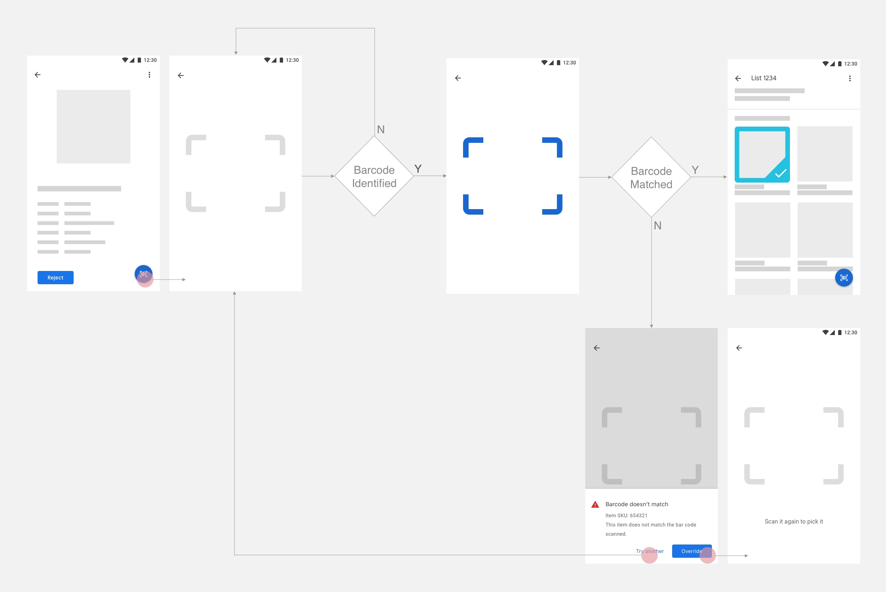

In merchant stores like Costco, because there are not a lot of variations (e.g. different flavors, different sizes) of a same product, most store associates can identify the item to pick without going into the item page.
On the other hand, in stores like Smart and Final, there are more variations of a certain product. For example, a cookie of a brand can have up to 5 different flavors. As a result, store associates tend to go into item detail page to check the item information before picking it.
In order to serve the needs of the 2 different types of stores, I proposed to provide an entry to the camera scanner from both the list page and the item page. I further proposed different flow for the 2 different use cases:
Scan from list
When scanning from the list page, if the barcode scanned doesn't match any the item in the list, it turns off the camera and goes back to the list page.

Scan from item page
When scanning from the item page, if the barcode scanned doesn't match the item, it stays at the camera view with the alert highlighting a unique identifier for the item.

I designed the second flow this way by assuming that the most frequent case that the barcode scanned doesn't match the item happens when there are 2 (or more) very similar items that are next to each other. However, this idea was pushed back by the developer because I wasn't able to prove that this is the most frequent case and he wants to keep the flow unify and simple.
I decided to go with unified flow not only because of the developer's opinion, but also due to my learning that keeping the camera on will consume more battery life - and this is not good to the store associates in that currently there's no standard process of charging the phone and that they don't want to be forced to stop working because the phone is running out of battery.
Design Variations
After finalizing the flow, I explored many variations of the design of the camera trigger and the scanner UI.